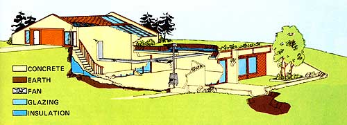

Sure, MOTHER has already told you about ultra-low-cost semi-subterranean and underground solar-tempered houses. (William T. Beale's 16' X 30', $6,000 Athens, Ohio guest house, for instance . . . or the Andy Davis $15,000, 1,200-square-foot "cave" dwelling up in Armington, Illinois.)
And she's told you how incredibly energy efficient such beneath-the-surface homes can be. (The Davis family, as you'll recall, heated their place during the catastrophic winter of 1976/77 for a grand total of $1.29.)
And she's pointed out many of the other good things about underground houses. (How quiet and peaceful they can be . . . the protection they offer from tornadoes and other storms . . . the fact that they can be brighter and far airier than most aboveground dwellings . . . the ease with which they can be cooled during the summer . . . and so on and on and on.)
In short, it has become all too obvious to the editors of this magazine-and to a great number of other folks who've seriously studied the situation-that subterranean homes are very definitely going to become more and more important as we all hurtle into a resource-poor, harsh-climated, overpopulated, and crisis-ridden future.
Despite all that, however, we are well aware that most members of our society have yet to discover underground housing-and the many benefits it offers-at all. And that the growing section of society which has become aware of subterranean dwellings . . . well, still generally tends to think of them as somehow "not as good" as the flimsy, overpriced and over mortgaged, expensive to heat and cool, aboveground, stick buildings almost all of us now live in.
This attitude is not entirely rational, of course, but then very few people any longer maintain that the human race is always rational. Think back to your old high school days: Remember? If the freshmen in a school started a fad . . . that was usually as far as it went. But if the seniors in another school started wearing the very same new style of clothing or using the same distinctive new greeting or whatever . . . it wasn't long before the fashion had spread to everyone in the building.
Now we've kinds, got a hunch that that's what's been happening with underground houses so far. Almost all the subterranean dwellings (at least the ones we've heard about) constructed up to this point . . . have been built by "ordinary" people, for themselves, on a very tight budget, and off in an out-of-the-way spot somewhere. Which is to say that the trend is still being promoted by "freshmen" . . . good people (darn good people! ), but the kind of folks that-at least in this field-our society chooses not to take too seriously.
What we need, then-to really get this very important movement off the ground-is for a whole batch of "seniors" to jump on the subterranean dwelling bandwagon. That is: Joe Suburb is going to keep right on turning his nose up at underground houses and all the fantastic advantages they offer . . . until he starts seeing real contractors building prestigious and very expensive below-grade homes in some of the ritzier neighborhoods out by the country club golf course. And then ole Joe is going to start yammering for his very own underground house so loud and so quick that this "revolution in residences" is going to sweep the country overnight.
And that's why we were so happy when we first heard about a new dwelling now being shown off near Columbus, Ohio. Sure, it's underground . . . it's largely passively solar-heated . . . it's quiet and vibration-free and very private inside . . . its interior is also unbelievably bright, and light, and airy . . . its pipes will never freeze . . . its exterior will never need maintenance . . . it will never be blown away by a tornado . . . etc., etc., etc. But far more important than that: This particular underground house is contractor-built, it's plush, it's expensive, it looks great . . . and it's located on the northwest corner of Columbus in the "ultra ultra" suburb of Westerville.
The designers and contractors responsible for the lovely home you see here are extremely serious about passively solar-heated underground housing. So serious, in fact, that they've formed an architectural/construction firm-Solar-Earth Energy, Inc.-expressly for the purpose of designing and building such dwellings. It's also interesting to note that the partners in the company "really get into their work" too: One of those partners (Buck Vaile) and his family have been living in the very house shown on these pages since last November.
Buck reports that his family used no fossil fuels at all, only a few hours of electricity, and a mere 1-1/4 cords of wood (burned in a Jøtul stove) to heat their 2,038-square-foot residence during the past unusually cold winter. Which is exceptional . . . especially when you realize just how many bitterly cold, completely overcast days that Columbus, Ohio suffered through earlier this year.
MOTHER has already covered the basics of good subterranean, passively solar-heated design (build in plenty of drainage around your structure, waterproof the dwelling's exterior wall, put insulation on the outside of the house's mass to turn the whole residence into one gigantic "thermal flywheel" that will coast right through all the high and low temperatures of a year's weather, "point" the building's largest expanses of glass-duo-paned and fitted with insulated shutters or drapes-south for winter solar energy collection, place an overhang over those windows to shade them from the high summer sun, etc.) so often that we won't repeat them again here. (See one of the sidebars with this article if you need a crash course in this subject, which can save your family tens-even hundreds!-of thousands of dollars during the next few decades.)
We will, however, point out that Buck Vaile and his SEE, Inc. partners were well aware of all those basics and used them to good advantage when they constructed Buck's new home. And we'll mention a couple of additional twists of their own that the SEE boys also incorporated into the residence.
First off, there's the "solaratrium" located on the north side of the underground house . . . between the living quarters themselves and an above-ground garage and storage area. The solaratrium's roof extends up above the earth's surface and is covered with transparent fiberglass sheets which are angled south to collect as much winter sunlight as possible.
The Vaile home does gain some wintertime solar energy passively from this sun room. Much of the warmth collected by the solaratrium, however, would just rise to the top of the 1-1/2 story room and stay there . . . except for a small fan installed in the house. The blower pulls the stratified thermal energy down through a duct running up to the top of the atrium, and distributes the heat to any areas that need additional warmth. (Another-exhaust-fan near the sun room's roof will expel any unwanted heat which builds up in the atrium during the summer.)
Secondly, the SEE crew has built 60 square feet of active hydronic solar collectors into the roof of the Valle home's garage/storage area. These collectors supplementally heat the household's water.
As Buck explains the systems: "We have passive solar space heat supplemented by what we call "hybrid" solar space heat from the solaratrium and active solar water heating. The entire package didn't add more than $3,000 to the cost of the house, though, and we feel it was money well spent."
For backup and additional warmth during the coldest part of the winter, the SEE home is outfitted with a Jøtul woodburning "firestove" (which consumed less than $100 worth of fuel last winter!). A duct directly above the stove collects heat which a fan then pushes to other parts of the house.
The sun-tempered underground dwelling is also equipped with baseboard electric heaters "mainly for reassurance and to please the bank". These heaters were used only in the youngest children's room a few nights at the heights of the winter's worst blizzards and once in a while in the bathrooms when someone was showering.
The SEE designers and builders were just as clever when it came to using the sun's rays for illumination in the Valle home. Every major room in the house gets abundant natural light from either the solaratrium or the windows across the front of the dwelling. Enough light streams in, in fact, to grow houseplants throughout the building . . . and food can even be grown in the atrium when it's used as a greenhouse.
Claustrophobiacs should be further reassured to learn that the interior color scheme (it reflects light) of the Valle house contributes a great deal to the open, roomy, bright feel of the structure. This feeling is enhanced even more by the building's ceilings . . . which are nine-instead of the usual eight-feet high.
To put it another way, everything about this SEE, Inc. dwelling is first class. From its oversized rooms, to the materials used throughout, to the careful thought that went into every facet of its siting and design, to the use of the natural light and heat which enters the structure, to the very expensive neighborhood in which the building is located . . . nothing has been stinted. And the price tag on the house-$122,000-certainly reflects the fact.
If you find that figure a little rich for your blood, though, don't panic. Thanks to this plush "showplace" (remember the senior class back in high school), interest in passively solar heated underground dwellings is starting to boom up Columbus, Ohio way. SEE, Inc. has already been commissioned to construct five more houses of the same general design . . . and some of them will cost only half as much as the original (the rest of the "school" is rushing to get in on the act).
And there's even better news yet: Buck Valle tells MOTHER that SEE, Inc. is just as anxious to promote passively sun-tempered underground dwellings- whether or not SEE, Inc. builds them -as we hope you are to give such a structure a try. For this reason, the firm stands ready to license other qualified contractors to fabricate SEE, Inc. designs.
And the best news of all: Solar-Earth Energy, Inc. is also putting together an information packet (available for $5.00) which contains further details about the house you see here and other SEE, Inc. designs. In addition to that, the company is assembling a $500 construction manual so detailed . . . that "almost anyone" should be able to use it to build his or her own SEE, Inc. design for tens of thousands of dollars less than a contractor-fabricated version of the same house. Send your $5.00 to Solar-Earth Energy, Inc., Dept. TMEN, 1695 Kenny Rd., Columbus, Ohio 43212. The information packet you'll receive in return will tell you all about this exciting program.
Regular MOTHER readers know that this magazine has been championing warm, safe, snug, stormproof, easy to (passively solar) heat and cool underground houses for some time. If this is your first exposure to the idea, however, here's how to learn more about the subject:
Start with "The Beale Solar-Heated Subterranean Guest House", pages 80-81, in MOTHER NO. 45. Then move on to MOTHER NO. 46's Plowboy Interview with Andy Davis (in which Andy tells how he built a 1,200-square-foot, three-bedroom underground home-which looks like $60,000-for only $15,000 in northern Illinois . . . and how he heated the building during the winter of 1976177 for the ridiculously low sum of $1.29).
Next up will be The Plowboy Interview with David Wright in MOTHER NO. 47. David has designed over 30 "sun tempered" and "passively solar conditioned" houses . . . and the interview was conducted in his present (97% heating and cooling self-sufficient) home on the coast of northern California.
Then, to learn how Jesse Savell-a contractor in Cotton, California-builds aboveground structures that are almost as energy efficient as the underground dwellings covered by the rest of the pieces listed here-read "Here's a Passively Heated and Cooled House That You Can Afford . . . and Will Want", pages 116-118, in MOTHER NO. 48.
"Landis and Pamela Gores' Semi-Subterranean 'House for all Seasons"', pages 64-65, MOTHER NO. 49, has another somewhat different slant on the subject. And "The Paul Isaacson Family Lives in the House of the Future", pages 101-103, MOTHER NO. 50, introduces still another passively solar heated, underground dwelling viewpoint, design, and method of construction.
(See pages 66-67 of this issue for information on how to order MOTHER's back issues.)
In their never-ending pursuit of energy savings, Buck Valle and the other good folks at SEE, Inc. recently tested a unique new shower head called the "SaverShower". And the gadget, they found, immediately reduced their hot water consumption so dramatically . . . that SEE, Inc. has acquired a dealership for the whole line of "Saver" fixtures and is now pushing them just as zestfully as the firm promotes its energy-conserving houses.
In fact, Buck Valle made a special trip all the way from SEE, Inc.'s home base of Columbus, Ohio to MOTHER'S offices in Hendersonville, North Carolina a few days ago . . . just to tell this magazine's editors about this rather amazing energy- and water-saving (and sewage-reducing) device.
As Buck pointed out: "Few families yet realize the almost unbelievable amount of money the typical household shells out every year for hot water. Which, in turn, makes it a little difficult sometimes to understand just how much one of these simple $12.95 shower heads can shave off the average annual electric bill. Believe it or not, though, our tests have shown us that those savings can easily add up to $120 a year. That's nearly a 1,000 return on your investment every 12 months!"
Buck then went on to explain how this rather incredible savings is made possible. "Water typically flows from a conventional shower head at the rate of eight to ten gallons per minute. Leave that shower running for 10 minutes or more, and you've just used 100 gallons of water . . . much of it heated. The average rate of flow from a SaverShower head, on the other hand, is only 2.2 gallons per minute. Let it run for the same length of time . . . and you've cut your water and water-heating bill for the bath by at least 60 %."
"Yes, but . . . " we immediately yes-butted, "it looks to us as if you'll also cut your skintingling enjoyment of the shower by at least the same 60 %. And it also seems logical to suppose that-to get clean-you'll probably have to stay under the spray at least 60% longer."
Well sir, there was only one way Buck could cap the discussion . . . and he had it at his fingertips. Digging into his pocket, he pulled out two SaverShowers and said. "Here. Test 'em yourself. Get a gallon container and a watch or clock with a second hand and see how quickly your present shower head fills the bucket. Next, install a SaverShower and time it. Then bathe with the thing and you tell me whether or not you find the bath satisfying and how long it takes you to get clean."
Two of MOTHER's people-Emerson Smyers and Roger Hoffmann (sweaty Roger, the guy who runs 12 miles a day)-accepted the challenge. Both took a SaverShower home, both tried the gizmo, and both reported: The shower felt great . . . every bit as refreshing as before the installation. And, while it took the same amount of time as usual to get clean, the SaverShower bath definitely consumed a lot less water."
But don't take Roger's and Emerson's word for it: Get your own SaverShower and see for yourself. A deluxe head is available for $12.95, a standard model for $9.95, and a sink aerator (which will allow you to save in the kitchen too) sells for $1.95 from Solar-Earth Energy, Inc., Dept. TMEN, 1695 Kenny Rd., Columbus, Ohio 43212. Include an additional 75 cents (shipping and handling) for each shower head or aerator you order and tell 'em MOTHER sent you.
And Roger and Emerson, you can bring back the test SaverShowers now. Roger . . . Emerson. Hey, you guys! Remember those shower heads that we gave you to test? Roger . . . Emerson?
EDITOR'S NOTE: If you like the house you see here, you'll be pleased to learn that MOTHER has made some special arrangements with SEE, Inc. Working drawings of the home (suitable for presentation to the VA, mortgage institutions, zoning boards, etc.) are available from Mother's House Plans, P. 0. Box A, East Flat Rock, N.C. 28726. A single set of the plans is $100, and four sets are ,BIAS. A materials list is also available, when ordered with the drawings, for an additional $10. Orders will be sent just class.
|
 LEFT: The solaratrium of Buck Vaile's passively solar-tempered underground house is so bright and sunny . . . that it can be used as either a winter playroom or a greenhouse. BELOW RIGHT: Large windows along front of the building admit winter sunshine . . . but are protected from summer sun 6y overhang. RIGHT: Exterior view of garage/storage area/atrium . . . above a photo of one of the home's bedrooms. BELOW NEXT: These views?from the living room, through the dining room/family room, to the solaratrium . . , and of the standby ""firestove""?certainly make one point: Living quarters in an underground house can be brighter and airier than the same space usually is in an aboveground dwelling |
|
|
|
|
|
|